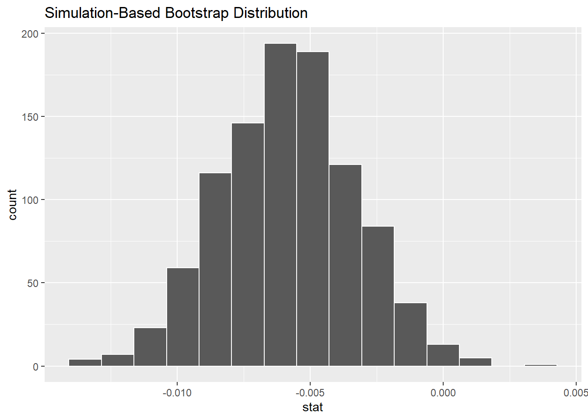

Confidence Intervals for Regression Parameters
Bootstrap Confidence Intervals for \(\beta\) in Simple Linear Regression (SLR)
Just as we did for Scenarios 1-4 in Table 1, we can use the infer package to repeatedly sample from a dataset to estimate the sampling distribution and standard error of the estimates of the intercept (\(\hat \alpha\)) and the covariate's parameter (\(\hat \beta\)) in the simple linear regression model \(\hat y_i = \hat \alpha + \hat \beta x_i\). These sampling distributions enable us to directly find bootstrap confidence intervals for the model parameters. Usually, interest lies in \(\beta\) and so that will be our focus here.
To illustrate this, let's return to the teaching evaluations data that we analyzed last week and start with the SLR model with age as the the single explanatory variable and the instructors' evaluation scores as the outcome variable. This data and the fitted model are shown here.
slr.model <- lm(score~age, data=evals)
coeff <- slr.model %>%
coef()
coeff (Intercept) age
4.461932354 -0.005938225 ggplot(evals, aes(x = age, y = score)) +
geom_jitter() +
labs(x = "Age", y = "Teaching Score") +
geom_smooth(method = "lm", se = FALSE)Figure 1: SLR Model applied to Teaching Evaluation Data
The point estimate of the slope parameter here is \(\hat \beta=\) -0.006. The following code estimates the sampling distribution of \(\hat \beta\) via the bootstrap method.
bootstrap_beta_distn <- evals %>%
specify(score ~ age) %>%
generate(reps = 1000, type = "bootstrap") %>%
calculate(stat = "slope")
bootstrap_beta_distn %>% visualize()
Now we can use the get_ci() function to calculate a 95% confidence interval and a 99% confidence interval. We can do this either using the percentiles of the bootstrap distribution or using an estimate of the standard error from the bootstrap distribution. Remember that both these CIs denote a range of plausible values for the unknown true population slope parameter regressing teaching score on age.
percentile_beta_ci <- bootstrap_beta_distn %>%
get_ci(level = 0.95, type = "percentile")
percentile_beta_ci# A tibble: 1 x 2
lower_ci upper_ci
<dbl> <dbl>
1 -0.0107 -0.000972se_beta_ci <- bootstrap_beta_distn %>%
get_ci(level = 0.99, type = "se", point_estimate = coeff[2])
se_beta_ci# A tibble: 1 x 2
lower_ci upper_ci
<dbl> <dbl>
1 -0.0124 0.000551Using the 2.5% and 97.5% percentiles of the simulated bootstrap sampling distribution the 95% confidence interval is (-0.011,-0.001).
percentile and the se methods, respectively, we conclude:
Confidence Intervals for the parameters in multiple regression
Let's continue with the teaching evaluations data by fitting the multiple regression with one numerical and one categorical predictor. In this model:
- \(y\): outcome variable of instructor evaluation
score - predictor variables
- \(x_1\): numerical explanatory/predictor variable of
age - \(x_2\): categorical explanatory/predictor variable of
gender
- \(x_1\): numerical explanatory/predictor variable of
evals_multiple <- evals %>%
select(score, gender, age)First, recall that we had two competing potential models to explain professors' teaching evaluation scores in Lab 4:
- Model 1: Parallel lines model (no interaction term) - both male and female professors have the same slope describing the associated effect of age on teaching score
- Model 2: Interaction model - allowing for male and female professors to have different slopes describing the associated effect of age on teaching score.
Recall the plots we made for both these models:
Figure 2: Model 1 (No interaction effect included)

Figure 3: Model 2 (Interaction effect included)
Let's also recall the regression models we fit. First, the regression with no
interaction effect: note the use of + in the formula.
par.model <- lm(score ~ age + gender, data = evals_multiple)
get_regression_table(par.model)| term | estimate | std_error | statistic | p_value | lower_ci | upper_ci |
|---|---|---|---|---|---|---|
| intercept | 4.484 | 0.125 | 35.792 | 0.000 | 4.238 | 4.730 |
| age | -0.009 | 0.003 | -3.280 | 0.001 | -0.014 | -0.003 |
| gender: male | 0.191 | 0.052 | 3.632 | 0.000 | 0.087 | 0.294 |
Second, the regression with an interaction effect: note the use of * in the formula.
int.model <- lm(score ~ age * gender, data = evals_multiple)
get_regression_table(int.model)| term | estimate | std_error | statistic | p_value | lower_ci | upper_ci |
|---|---|---|---|---|---|---|
| intercept | 4.883 | 0.205 | 23.795 | 0.000 | 4.480 | 5.286 |
| age | -0.018 | 0.004 | -3.919 | 0.000 | -0.026 | -0.009 |
| gender: male | -0.446 | 0.265 | -1.681 | 0.094 | -0.968 | 0.076 |
| age:gendermale | 0.014 | 0.006 | 2.446 | 0.015 | 0.003 | 0.024 |
Notice that, together with the estimated parameter values, the tables include other information about each estimated parameter in the model, namely:
- std_error: the standard error of each parameter estimate
- statistic: the test statistic value used to test the null hypothesis that the population parameter is zero
- p_value: the \(p\) value associated with the test statistic under the null hypothesis
- lower_ci and upper_ci: the lower and upper bounds of the 95% confidence interval for the population parameter
These values are calculated using the theoretical results based on the standard assumptions that you will have seen in Regression Modelling in first semester. Theses values are not based on bootstrapping techniques since these become much harder to implement when working with multiple variables and its beyond the scope of this course.